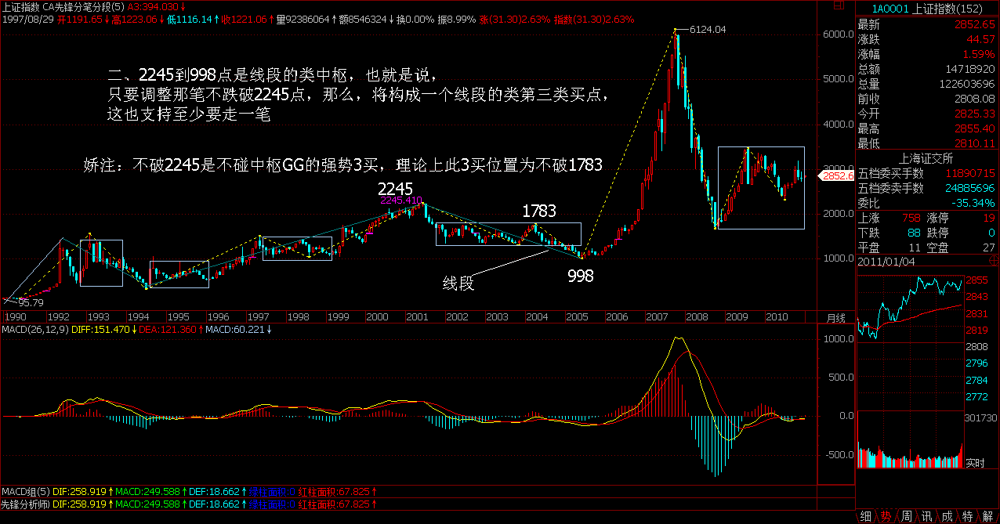
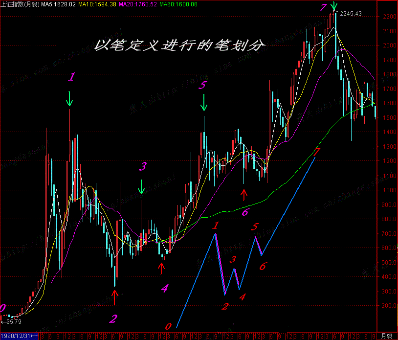
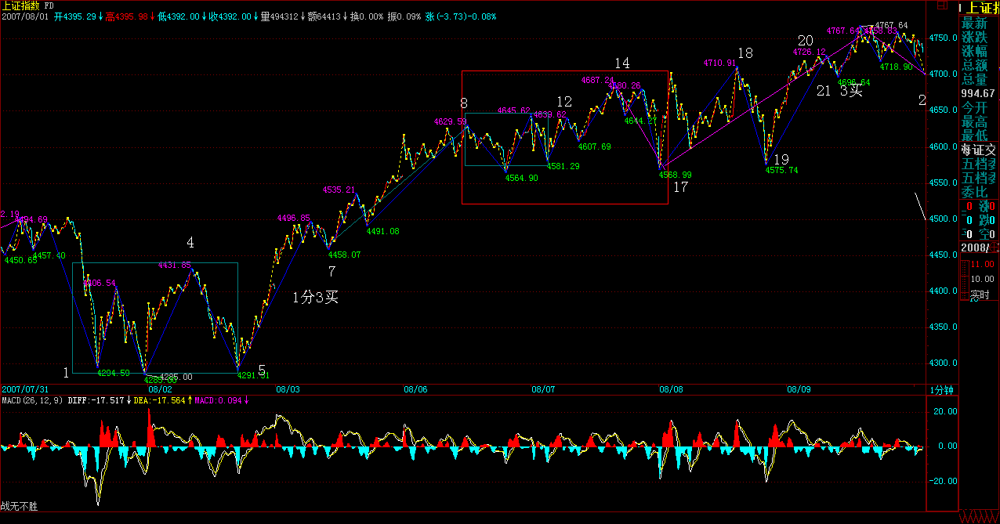
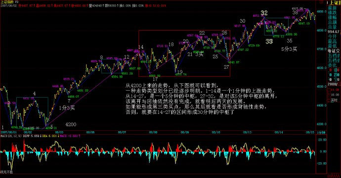
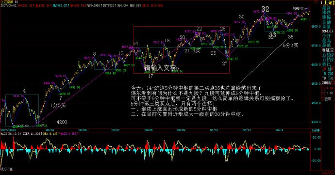
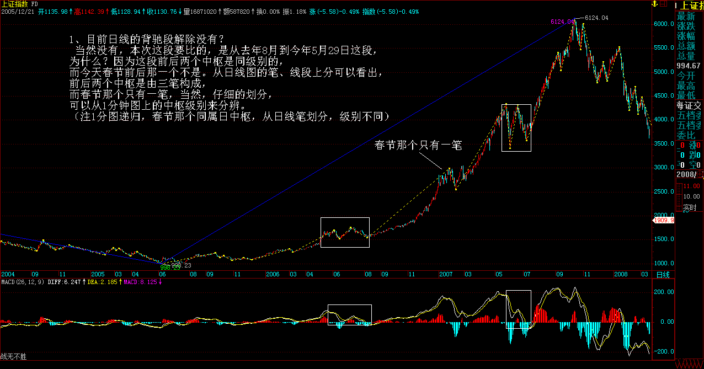
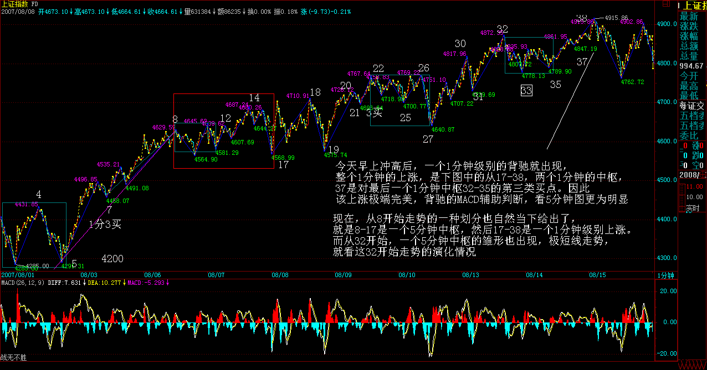

|
 |
教你炒股票69：月线分段与上海大走势分析、预判
(2007-08-09 23:03:22)
分型、笔、线段，在1分钟图上可以分辨，在月线图上的道理是一样的。但用月线图分辨，等于用一个精度超低的显微镜，只能看一个大概，但这个大概，却是最实质性的，是一个大方向。
下面，就是上海指数的月线图。绿箭头指着的是顶分型，红箭头的是底分型。打“X”的就是该分型不符合笔所要求分型的规范。这里，只要是两条：一、顶和底之间没有至少一K线；二、不满足顶必须接着底、或底必须接着顶。
例如，第一个红箭头和第二个绿箭头之间显然不能构成一笔，也就是说，这两个，只能取一个：如果取第一个红箭头，那么第二个绿箭头就不是笔中分型，那么第二个红箭头，显然是一个底分型，因此，就形成两个底分型连续的划分，显然，这时候，第一个就不算了，这和前面说取第一个红箭头对着的底分型矛盾。所以，这里，只能取第二个绿箭头，这时候，第一个绿箭头对应的顶分型，自然就不算笔中的顶了。
后面的各分型，带“X”的，都可以按照上面两个原则去分析。
有人可能要问，这样分型的确定，在当下如何完成？这必须当下去完成。例如，当走势走到第一个红箭头时，显然，第一绿箭头的顶分型也可以暂时看成是确定的顶分型。但当第二绿箭头走出来后，这个问题就有了可修改的地方。
有人可能要疑问，这样分型是否随时可以修改？答案是否定的。一旦完成的图形，这修改就不可能了。分型可修改，证明图形没完成。例如，当第二个红尖头分型出现后，前面三个的分型的取舍就是唯一的。这个分型的可修改性，反而是一个对走势判断极为有利的性质，例如，第二个绿箭头走出来后，这图形未完成的性质就是百分百确定了，但所有图形必然完成，走势必完美。如何才能完美，这样，在理论的框架下，只有极少的可能，而这些可能，就成为综合判断的关键条件。然后根据各级别图形的未完成性质，就可以使得走势的边界条件极端的明确与狭小，这对具体操作，就是极为有利的。注意，这可和概率无关，是百分百的纯理论保证，最终所依据的，就是在本ID理论最早反复强调的走势必完美原则。
其实，本ID的理论的关键不是什么中枢、走势类型，而是走势必完美，这才是本ID理论的核心。但要真正理解这个关键，可不是看字面意思就能明白的。
显然，目前月线上的第1、2段已经走出来，其中，按照线段里笔的类背驰，1的结束那顶与2结束那底都是极为容易判断的。上海指数的历史大顶与底，根据这线段的划分，都不是什么难搞的秘密。那么，对现在依然进行中的第3段走势，有什么可百分百确定的呢？
一、显然，这一段要成为段，那至少要三笔，而现在连一笔都没走完，因此，这轮行情的幅度，可想而知。也就是说，即使该笔走完，一个笔的调整后，至少还有一个向上的笔。
二、2245到998点是线段的类中枢，也就是说，只要调整那笔不跌破2245点，那么，将构成一个线段的类第三类买点，这也支持至少要走一笔。
（娇注：当时在2007年8月4300点，禅师按照常理推断月线一笔一般不会破2245，所以这样叙述。结果一笔破1783到1664，呵。）
（娇注：转折分两种。常规转折与非常规转折。常规转折即标准级别对应形态学背离。非常规转折即为小转大。通常非常规转折都具有非常规空间换时间之特性。6124缠主判断后面是常规发展，结果是非常规转折。理论没问题，分类少一类。同学们理论清楚就不用去指责缠主此处之失误。非理论失误，乃人为主观之误。）
 三、笔的完成，必须要构成一个顶分型。而一个月线的顶分型将如何构成？这意味着什么，这个问题就当成是一个作业，各位去思考一下，然后给出这个结论对应的操作策略。从中也可以亲自实践一下，去明白一下理论指导下操作的力量。
最后，再提一个思考题：为什么本ID在7月份要大搞满江红，而8月以后就放手坐轿子，请利用分型的原理给本ID的行为一个技术上的解释。（娇注：技术解释为使得月线顶分不成立，上升笔延续）
（张大山）
上证2245前月K线笔划分(终结版),仅此希望初学缠论者,不要在笔的划分上再过分纠缠了。笔的划分有着严格的定义，一切按定义来就行了。
(娇注：严格分笔定义，张大山学长的上证月线图是正确的。禅师上图分解有误）（不知在何方：大师是正确的）
 附；68课部分回复
缠中说禅：
2007-08-09
16:14:48 [举报]
全线飘红 删除此人所有评论
2007-08-09 16:09:56 成分股行情，首先是最大那50家，然后是300，最后才会轮动到二、三线，当然，这不是绝对的，只是大方向。
缠中说禅：
2007-08-09
16:18:21 [举报]
[匿名] 与你同行 删除此人所有评论
缠中说禅：
2007-08-09
16:21:19 [举报]
[匿名] 恒灵 删除此人所有评论
缠中说禅：
2007-08-09
16:26:22 [举报]
全线飘红 删除此人所有评论 应该是两市权重前50，然后两市的前50就是前100了，然后是300。一般中间那种情况很少用到。
缠中说禅：
2007-08-09
16:30:15 [举报]
[匿名] 胡子大将军 删除此人所有评论
缠中说禅：
2007-08-09
16:33:36 [举报]
[匿名] 贪心病犯了的人 想您提示最近它的走向可否,谢谢!
==
缠中说禅：
2007-08-09
16:37:33 [举报]
石头叁 删除此人所有评论
缠中说禅：
2007-08-09
16:41:06 [举报]
[匿名] 缠心禅意 删除此人所有评论
缠中说禅：
2007-08-09
16:43:28 [举报]
[匿名] 执迷不悟 删除此人所有评论
缠中说禅：
2007-08-09
16:45:46 [举报]
[匿名] 大盘 线段走完的划分，多少有些滞后性质，因为至少需要类顶分型中一个下的一笔后才能最终确定， ==
本来就不能用线段来操作，至少要1分钟以上级别的。当然，实际上，一定要线段操作也可以，这样就要用类背驰的概念。
缠中说禅：
2007-08-09
16:47:46 [举报]
小丸子
势上，下图中20-21是14-17的1分钟中枢一个类第三类买点
==========请问缠20-21怎么不是16-19这个一分中枢的三买
==
也可以是，只是看成14-17，后面的就是中枢延伸。
缠中说禅：
2007-08-09
16:54:02 [举报]
[匿名] 大道 删除此人所有评论
2007-08-09 16:49:13
女王好，目前学习您的线段理论后，对大盘的走势略微入了一点门了。但头疼的是，资金却始终在低位，原因就是始终找不准板块的节奏，您能对板块的轮动或如何发现市场的热点指点一二么，谢谢女王，盼复。
每日解盘(2007-08-09 16:04:24)
顶住明天，第四拨人才可能解脱。
(2007-08-09 16:04:24)
昨天说，工行发疯后，第四拨人只能继续轮动板块把第五拨人蒙骗进来。今天，板块轮动再次展开，当然，本ID已经给这论行情定了一个性，就是成分股的泡沫化行情，最终，大笨象要跳小步舞，甚至都要变小笨鸟飞得满天都是，行情的发展继续按这个性质不断展开。至于哪天才会泡沫爆破，无须预测，市场自然给出。
走势上，下图中20-21是14-17的1分钟中枢一个类第三类买点，站在8-17这个5分钟中枢的角度，明天是否能形成第三类买点就极端重要了。（注意，图形一收放，图中数字会走，本ID今天才发现这问题，昨天图中的17位置移动了，今天这个位置才是对的，其实，这个根据定义就很容易发现，17后向上的中间有一个X，就是因为这不构成一笔，因此，18必须到目前的位置才满足至少三笔的要求。）

因此，今天的题目是针对此而说的，只要能顶住明天，形成这个5分钟中枢的第三类买点，然后再拜托周末没有大的消息，再给两天时间大肆宣传，下周一，新的资金才会有机会补充进来。今天成交量的萎缩，使得第四拨人的努力有不靠谱的地方，因此，明天的第三类买点至关重要，一旦出现跌回8-17的中枢，那么这群人当举重手的可能性就根本无须探讨了。 热点在震荡中蔓延
(2007-08-10 15:56:27)
昨天已经给了第四拨人一个任务，就是顶住。可以这样说，在外围环境如此恶劣之下，这总算顶住了。当然，站在本ID不厚道的角度，会说他们姿势不够优美。周末消息面，就决定这拨人的短线命运。
技术上，今天5分钟的第三类买点并没有被制造出来，因此依然只能归于中枢震荡的范畴。下周一，能否制造此买点，将决定短线大盘的上攻力度与强度。当然，偷懒的、看不懂的，就继续5日线，这确实是懒人的懒招数。
个股方面，昨天在回答问题时说了，现在是从大盘50到300的热点蔓延，如果这蔓延能成功，那么大盘的热度还会增加，今天，这迹象已经开始。更重要的是，今天ST大面积启动，也表明短线的投机资金开始蠢动起来，因此，下周的热点蔓延能否成功，是决定行情延续时间的关键。
热点，如期蔓延中
(2007-08-13
15:38:41) 上周末说了，热点会逐步蔓延，从50-300-二、三线，今天，300中已经骚动不断，而二、三线，也已经有不少按捺不住蠢蠢欲动了。今天唯一不完美的，就是第三类买点还没有走出来，所以，明天的走势依然有变数。最简单的，还是看5日线。
从4200上来的走势，从下图就可以看到，一种走势类型划分已经逐步明朗。1-14是一个1分钟的上涨走势，从14-27，是一个5分钟的中枢，27-32，是对该5分钟中枢的离开，该离开与回抽依然没有完成，就看明后两天的发展。如果能形成第三类买点，那么其后就看是否形成背驰性走势，否则，就要在14-27的区间形成30分钟的中枢了。

个股方面，没什么可说的，还是中字头。N天前，本ID骂中行和中石化连新高都不去太过分，今天，也都基本新高了，这可以看出，中字头就是有力量。当然，所谓的中字头，就是大型国企，只是本ID比较懒，就买其中带中字开头的，这样好记。当然不会有人觉得，如果没有中字头的就不会涨了。原来的那十几只老股里，依然是中字头的000777表现最好，后面，一旦热点蔓延成立，其他都会逐步动起来的。本ID买股票从来都不是乱买的，8元让各位买000777时，各位当然不可能知道该股基本面将会怎样，但本ID就知道，这就是对基本面的把控能力，光技术面，只是一方面。例如，600649，大概到现在，没人知道这股票里卖的什么药，但如果你去研究一下该股是现在管理层的资本运用的辉煌历史，还有上海市对国企重组的计划，那么，当然就明白，本ID当时让各位在6元买入，不是瞎说的。好的剧本，当然是慢慢展开的，本ID经常是在序幕时就告诉各位，所以，如果没耐心的，千万别买本ID说的股票。否则，请问，有谁能把000777从8元拿到现在？大概，除了本ID，来这里的人是不会有了。（这里原有私人资料已删除，有缘得之，无缘亦不失，梦中游戏，能窥操作之一斑，不枉本ID之冒险一贴。）
下面是分段图，各位研究去吧，有一个谈判在4点，先下，再见。
每日解盘(2007-08-14 15:49:37)
热点蔓延，阳光下没有新鲜事
(2007-08-14 15:49:37)
当然，没有阳光下也同样没有新鲜事。今天的走势，唯一的特点，就是没有新鲜事。从上周起，本ID不断强调热点开始蔓延，今天，这热点已经开始燎原。50-300-二、三线，本ID已经给股票的热点蔓延画出了线路图，现在，不过是按着线路图的一种演绎，正所谓阳光下没有新鲜事。今天，14-27这5分钟中枢的第三买点35也总算给憋出来了（偶尔看到有问为什么不是九段？九段可延伸成5分钟中枢，可不等于5分钟中枢就一定是九段，这么简单的逻辑关系可别搞糊涂了。）5分钟第三类买点后，只有两个选择：一、继续上涨直到形成新的5分钟中枢；二、在目前位置附近形成大一级别的30分钟中枢。

现在，关键是热点的蔓延持续，只要这没问题，一切都好办。站在日线角度，提两个思考题：
1、目前日线的背驰段解除没有？提示，关键是哪段和哪段比，连相比的对象都没分清楚，还谈什么背驰段？更不用说什么精确定位了。
2、4174点的1/2突破后，下一条真正的压力线在哪里？
注意，本ID战略转移，并不会影响博客的一切活动，只是有时候晚上的文章，可能会因为应酬改到早上发，如此而已。而且，本ID现在是战略转移，0成本的股票是不会抛的，没到0成本的，本ID也不会胡乱抛的，没到卖点，凭什么抛？今天，能在49下买到002149的，可要感谢本ID，某人脑子进水，竟然企图让本ID在50下出来，一开盘就企图打压，脑子有水吧？这股票，本ID会抛至少一半的，但想让本ID今早49以下就抛，简直病得不轻。
今天可以回答问题到4点半。
公募基金经理“快男”发展模式的不可持续
(2007-08-13 08:29:07)
对于粉丝无数、发行井喷的公募基金，探讨其发展模式的不可持续，似乎有点杞人忧天。但公募基金经理的跳槽比例在今年达到惊人的40%，已明白无误地表明，如今这种基金经理“快男”发展模式的不可持续。
表面上，公募基金经理跳槽是由于个人待遇以及业绩压力等原因。众所周知，公募基金只收取管理费，相对于私募基金的收益提成模式，其分配上的激励机制明显不如后者。但只收管理费模式意味着旱涝保收，收益提成模式在牛市中可能兴旺一时，而在熊市中，则会引发无数法律、经济纠纷，终不是长久之计。
当然，有人可能反驳说，收益提成模式能使得基金管理者的优劣得到更直接地反映，使得优秀的基金管理者能得到更大的发展，因此，公募基金也可以尝试采取相应的模式。但是，在只收管理费模式中的管理资金大小与收益提成模式中的分成收益大小具有同等的赏优汰劣意义，而公募基金占有制度上的先天优势，由于能够合法面向公众募集，其资金规模具有私募基金所不可比拟的优势，至少在目前的经济、法律、社会结构下，只收管理费模式是获取这种募集优势所必须付出的代价，不仅公募基金不可能采取收益提成模式，而且阳光化的私募基金也只能采取只收管理费模式。
募集范围的大小通常正相关于分配比例的大小，例如，私人股权基金，其募集范围在主要针对二级市场的公募与私募基金之间，一般就采取收取管理费与比例较低提成的综合分配模式。如果收取了管理费，那么像私募基金那样根据收益大小最高分成可达到50%的分配模式是不切实际的。公募基金只收管理费模式的不可改变，决定了其内部的分配机理机制也不可能有大的实质改变，因此，企图通过公募基金分配方式私募化而使其可持续发展是不切实际的。
由于个体利益的巨大诱惑，明星式人才必然趋向于高比例分配激励的私募基金，这对公募基金来说，基金经理“快男”模式将形成一个恶性循环，在私人利益驱动下，更多人会把公募基金当成积累个人资源的平台。一旦从这平台得到个人所期望得到的资源，离开就成了他们必然的选择。现在开始采取的双基金经理制，其实更坏，等于把这跳板上的人又增加了一倍，而这些人，站在长远的角度，对于公募基金来说都是狮子虫。
要解开这个恶性循环，就不能培养“快男”式基金经理，而是要依靠集体、团队的力量。要明星化的不是个人，而是团队。要形成这样一个良性循环，就是让优秀的人才能以在明星团队为荣。这有点类似“智库”的品牌建立，一个“智库”是否优秀，从来都不是因为里面有多少“快男”，而是该“智库”的传统、风格、团队的综合研究力。一个更通俗的例子就是，无论北大、清华曾出过多少“快男”，但北大、清华的名声却依然凌驾于一切“快男”之上。
因此，对于公募基金来说，应该淡化基金经理的个人色彩，突出团体的风格，逐步形成自己的特色与传统。一个好的基金，一个能可持续发展的基金，就应该走金融“智库”的品牌之路。另外，在个人经济利益上，对基金管理公司进行适当的股权创新，加大核心团队的持股比例，这也是必要的。
最后，附带说说8月大盘的走势。7月大盘站住了5月均线并突破了4159点的1/2线，目前该线已经上移到4174点，而5月均线也上移到4170点附近，并且7月长阳的一半位置在4136点，因此，4150点附近成了大盘中线能否保持强势的最重要位置。只要能有效站稳该位置，那么大盘的整体走势就能保持向上拓展空间的能力，否则将引发大盘周线指标的走坏，至少要重新陷入新的大震荡中。
但即使大盘能保持强势，本月也一定要注意大盘过分冲高所隐含的月K线上影杀伤力。8月是宏观政策理清思路的关键时间，这方面的变动将对大盘走势起着决定作用。此外，外围股市的走势也会对大盘走势产生影响。全球化社会里，没有哪个股市是可以与世隔绝的。个股方面，一、二线成分股的行情依然会延续，但要注意升幅过大后的短线震荡风险，而当业绩风险释放后，二、三线题材股会找到重新活跃的动力。
41与1，本ID对二级市场兴趣已失
(2007-08-13 21:26:14)
周五，本ID是一边叨唠，一边让人报盘买股票。一个41元的股票，本ID最高买到近43元，心里越买越窝火。看看，里面的人，1元的成本，那种PE游戏，本ID也干着，凭什么让本ID贵了40来倍来买？
今天下午，一个关于PE的谈判，本ID已经决定全面转战PE，当然，撤退是战略性的，本ID决定的原则是：第一，本ID将不会再买入任何二级市场的股票；第二，任何成本不为0的股票，本ID都将把成本逐步抛到0为止；对成本为0的股票，本ID将持有到大牛市结束，有空可以继续玩先砸后买增加筹码的游戏。
本ID已经有了基本的判断，就是谁执PE牛耳，谁得中国资本市场的天下，PE中，除了Pre-IPO等，类似收购基金之类的，在中国依然没有大发展，当然，Pre-IPO这类活动当然不能放弃，但收购基金之类活动，也是可以逐步展开的。在中国，目前类似活动搞得比较好的，是一个生了5个孩子的海龟中男。
当然，完全放弃二级市场是不行的，所以必须留下已经有的根据地。但如果现在不到PE上大发展一把，那么就整天为人做嫁衣裳了。前期，本ID那一顿忙，已经为此铺好了路。
当然，在二级市场中，也有类PE的机会出现，也就是当大的波动让某些大的重组股票达到足够吸引的地步，这也是好的介入机会，在全流通时代，如何用收购基金的模式在二级市场搞上一票，这也是一个有趣的活动。但目前讨论这个问题有点无聊，现在，二级市场之外黄金满地，本ID脑子又没进水，没那闲工夫搞这二级市场了。
以上都是心里话，也是本ID的决定。当然，PE的活，意味着整天要腐败，这是本ID最不喜欢的，当然，有些活可以让别人干，本ID只要有时间，依然会保持每天的解盘。毕竟，对于散户，二级市场是唯一可大面积介入的地方，而且，原始积累也只能靠这地方，山高水长，如果本ID能帮各位一把，也算结一段善缘。
本ID会尽力为之，各位有缘得之吧。
附录：
各位请不要胡乱猜疑，本ID关于二级市场20年以上大牛市的判断从来没改变过。本ID春节后说在突破GDP之前，成分股为主的第一段行情一定不会结束，当时，有谁能如此明确的说？又有谁能把20年的大牛市给明确分了段？本ID的这观点从来没改变过。
缠中说禅：
2007-08-14
15:58:20 [举报]
[匿名] 新浪网友 删除此人所有评论
缠中说禅：
2007-08-14
16:01:58 [举报]
[匿名] 新浪网友 （这里买点就是1分盘整加1分盘整）
缠中说禅：
2007-08-14
16:06:43 [举报]
[匿名] 举杯邀明月 删除此人所有评论
缠中说禅：
2007-08-14
16:08:26 [举报]
[匿名] 新浪网友 删除此人所有评论
缠中说禅：
2007-08-14
16:10:59 [举报]
[匿名] 新浪网友 删除此人所有评论
缠中说禅：
2007-08-14
16:22:29 [举报]
[匿名] 新浪网友 删除此人所有评论
缠中说禅：
2007-08-14
16:24:52 [举报]
[匿名] 新浪网友 删除此人所有评论
缠中说禅：
2007-08-14
16:29:32 [举报]
[匿名] 天眼 删除此人所有评论
缠中说禅：
2007-08-14
16:30:52 [举报]
缠中说禅：
2007-08-14
16:36:13 [举报]
年年一变三 删除此人所有评论
缠中说禅：
2007-08-14
16:40:26 [举报]
[匿名] 新浪网友 删除此人所有评论
教你打坐3：打坐前的基本功夫(2007-08-14
22:42:24)
先给下午那两个问题的答案：
1、目前日线的背驰段解除没有？
当然没有，本次这段要比的，是从去年8月到今年5月29日这段，为什么？因为这段前后两个中枢是同级别的，而今天春节前后那一个不是。从日线图的笔、线段上分可以看出，前后两个中枢是由三笔构成，而春节那个只有一笔，当然，仔细的划分，可以从1分钟图上的中枢级别来分辨。
 2、4174点的1/2突破后，下一条真正的压力线在哪里？
是2/3线，目前在哪里，各位自己算算。
还有一个问题请思考，日线图上的笔、线段，和一分钟图上的日中枢有什么关系？
（娇：显微镜倍数不同的关系，精确度不同的关系）
外围因素引发今日震荡
(2007-08-15
15:49:33)
先解答一个和打坐有关的疑问，本ID说念想把横隔膜以下气息在横隔膜以上送出，这气肯定不是真正呼吸之气。人体结构里，横隔膜以下哪里有什么呼吸之气？那只是一念，以此一念带动那非气之气之真气。
好，说股票。最近，外围市场鬼哭狼嚎的，弄得全世界的鳄鱼都痛哭流涕。中国市场震荡一下，也很应该。技术上，昨天已经很明确说了，现在，或者继续上涨直到出现新的5分钟中枢，或者就在这里形成一个30分钟中枢，除此之外，别无选择。
今天早上冲高后，一个1分钟级别的背驰就出现，整个1分钟的上涨，是下图中的从17-38，两个1分钟的中枢，37是对最后一个1分钟中枢32-35的第三类买点。因此，该上涨极端完美，背驰的MACD辅助判断，看5分钟图更为明显。（各位请自己去看，这里的贴图只有200的额度，本ID不能浪费太多空间。在5分钟图中，看对应1分钟图中的走势去比较力度。）这是一个标准的走势，十分教科书。
后面的震荡十分正常了。现在，从8开始走势的一种划分也自然当下给出了，就是8-17是一个5分钟中枢，然后17-38是一个1分钟级别上涨。而从32开始，一个5分钟中枢的雏形也出现，极短线走势，就看这32开始走势的演化情况。

个股方面，请问002149让各位爽了没有？当然，后面的走势和本ID没关系，本ID只在上周五最高买到43元，然后把其中41附近一部分清单在这里放了几个小时。这股票，为什么还有这么多人抢入，最主要是基本面与成长性。本ID在N个月前，强调过中小版成长股的中长线介价值。后来，本ID也告诉过介入了002121，注意，这股票和002149都和600635有关系，那纯属意外。对中小版，一定要看其成长性，而且要有耐心。
注意，任何股票，都不值得追高，包括如002149这样的。
不过，这都是老皇历了，本ID现在不会再买任何二级市场的股票，只会等待机会把成本不为0的的出掉变为0，然后都去干PE去。至于其他股票，本ID说过的任何股票，本ID都持有着，当然，很多都是0成本的，但本ID都会持有到牛市结束。
这前面说过。本ID再强调一次，本ID对大牛市的信心没变，但目前进入成分股泡沫行情的判断也没变。成分股行情结束后，还至少有两轮行情，分别是成长股与重组股带头，这些游戏，至少玩20年，早着呢。
本ID就多累点，PE多点如002149的，让各位在40元买了也不后悔的好股票。
二级市场，咱相信群众。 今天有事要去谈，先下，再见。
|
|
|
|